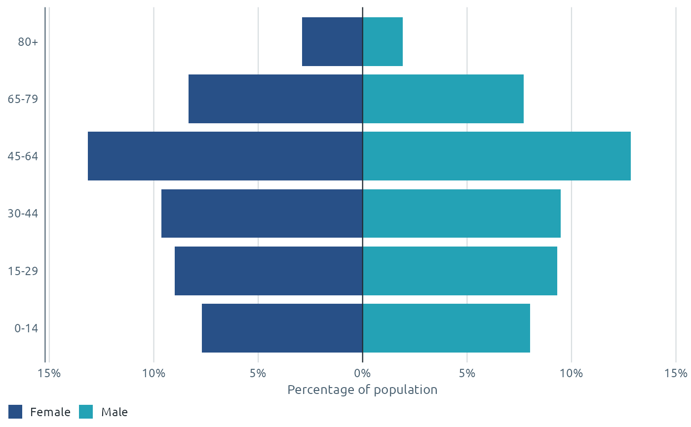

Horizontal bars by age group, with one sex on each side of a central axis. Optionally overlays a comparison population (e.g. Wales overall, or a previous year) as outlines.
Usage
phw_pyramid(
data,
age,
sex,
value = NULL,
percent = FALSE,
left = NULL,
compare = NULL,
palette = NULL,
compare_colour = phw_colours[["black"]],
...
)Arguments
- data
A data frame with one row per person, or with a value column.
- age, sex
The age and sex columns, unquoted as in dplyr (strings work too).
ageshould be a factor in age order (or will be sorted as text).- value
Optional column of counts or populations.
- percent
Show each bar as a percentage of the total, so populations of different sizes can be compared?
- left
Which
sexvalue goes on the left. Defaults to the first level.- compare
Optional data frame with the same columns, drawn as outlines.
- palette
Two colours, or a palette name.
- compare_colour
Outline colour for
compare.- ...
Passed to
ggplot2::geom_col().
Examples
ages <- c("0-14", "15-29", "30-44", "45-64", "65-79", "80+")
pop <- expand.grid(age = factor(ages, ages), sex = c("Female", "Male"))
pop$n <- c(240, 280, 300, 410, 260, 90, 250, 290, 295, 400, 240, 60) * 1000
phw_pyramid(pop, age, sex, value = n, percent = TRUE)
